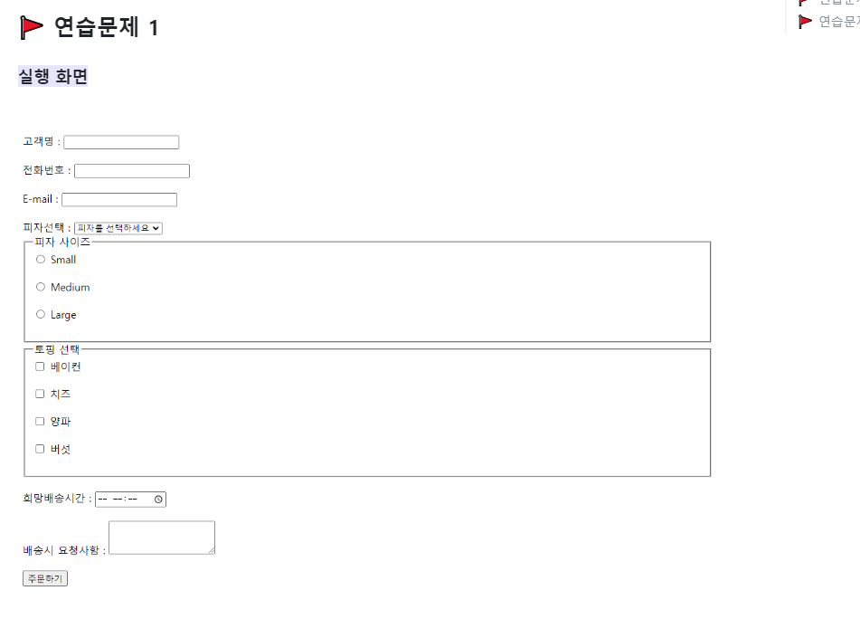
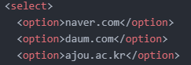
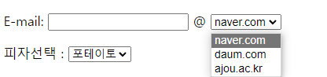
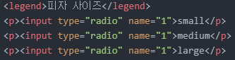
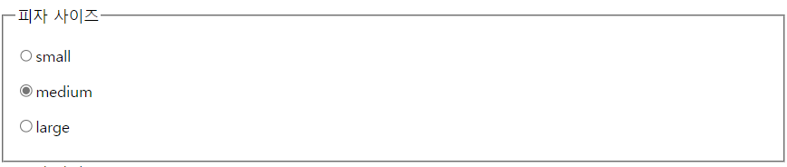
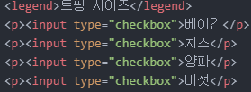
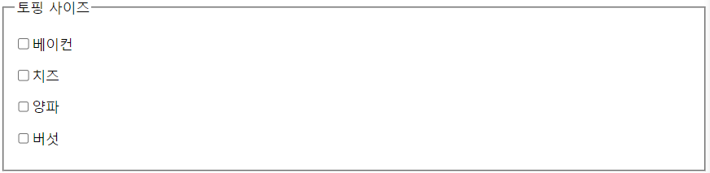

어제는 이 문제를 풀어보았다 효준이랑상단부에 있는 고객명,전화번호,E-mail은 input 태그를 활용하면 된다.
input-write를 활용하면 박스 안에 사용자가 직접 입력할 수 있게 된다.
다음은 E-mail 선택 부분인데 여기는 크게 select 태그를 걸고 그 밑에 option태그를 따로 걸어서 E-mail 도메인을 선택하면 된다.

이런식으로 태그를 걸게 되면

이렇게 결과가 나오게 된다.
밑에 피자 사이즈 테이블을 만드는 것은 legend태그를 사용하면 된다.
legend태그를 사용 후input-radio 를 사용하면 중복선택이 안되게 피자 사이즈를 선택할 수 있다.

이렇게 입력을 하게 되면

이렇게 나오게 된다.
그 밑에 토핑 사이즈는 input-radio태그가 아닌
input-checkbox태그를 사용하는데
이는 중복체크가 가능하다는 점이 input-radio와의 차이점이다.

이렇게 태그를 걸면

이렇게 나오게 된다.